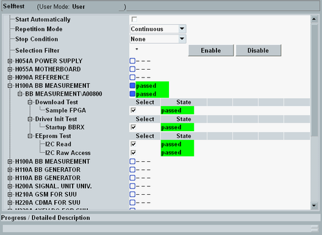

General Test Features
All selftests are arranged in the "Setup" dialog, section "Maintenance > Selftest".

Selftest dialog
In the dialog, you can select one or several tests for execution and configure the repetition mode (once or continuously). Moreover, you can save any configuration of the "Selftest" dialog to a profile for later reuse.
The result of each test ("State") is displayed in the individual test section:
- Invalid: No test performed yet, no result available
- In progress: Test running, no result available yet
- Passed: Test passed, all measurements within the factory-set tolerances
- Failed: Test failed, one or more measurements out of tolerances
- Skipped: Test skipped because it could not be performed with the current instrument configuration
To perform a selftest on the temperature-controlled crystal oscillator (TCXO) or on the optional oven quartz (timebase OCXO, option R&S CMW-B690x), switch the R&S CMW to internal reference frequency source. See "Frequency Source". This action ensures that the oscillators are power-supplied. |